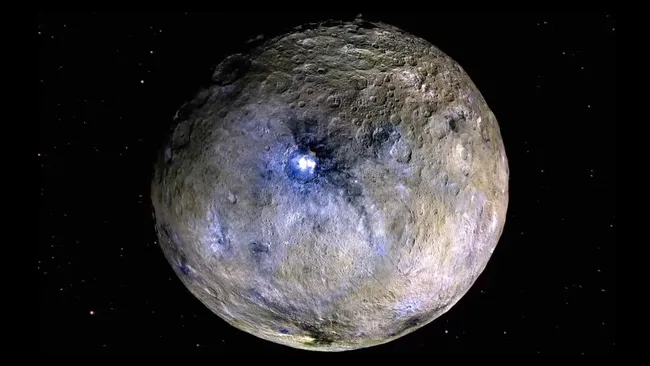

1 Ceres (Planet Katai)
Ceres (1 Ceres) adalah planet katai terbesar sekaligus objek tunggal terbesar di dalam Sabuk Utama asteroid yang terletak di antara orbit Mars dan Yupiter. Ditemukan oleh Giuseppe Piazzi pada tahun 1801, Ceres awalnya diklasifikasikan sebagai planet, kemudian asteroid selama lebih dari satu abad, hingga akhirnya ditetapkan sebagai planet katai oleh International Astronomical Union (IAU) pada tahun 2006. Ceres adalah satu-satunya planet katai di Tata Surya bagian dalam. Karena massanya menyumbang sekitar sepertiga (30%) dari total massa Sabuk Utama, Ceres memiliki gravitasi yang cukup untuk mencapai kesetimbangan hidrostatik, menjadikannya berbentuk spheroid terkompresi. Ceres kaya akan kandungan es air dan mineral terhidrasi, bahkan diduga memiliki lautan air asin di bawah permukaannya.